전산응용토목제도기능사 (2003-07-20 기출문제)
1과목: 토목제도(CAD)
1. 철근의 직경이 최소 어느 값 이상이면 겹침이음해서는 안되는가?
- 32㎜
- 35㎜
- 38㎜
- 41㎜
(정답률: 56%)

2. 압축을 받는 이형철근의 정착길이에서 지름이 6㎜ 이상인 나선철근이 10㎝ 이하의 핏치로 철근을 둘러싼 경우 보정계수 값으로 옳은 것은?
- 0.95
- 0.90
- 0.85
- 0.75
(정답률: 44%)
3. 철근을 소요두께의 콘크리트로 덮는 이유를 설명한 것 중 잘못된 것은?
- 철근의 산화를 방지하기 위하여
- 시공의 편의를 위하여
- 부착응력을 확보하기 위해서
- 내화적으로 만들기 위해서
(정답률: 72%)
4. 흙에 직접 접하지 않는 현장치기 콘크리트에서 보, 기둥의 피복두께는 최소 얼마 이상이어야 하는가?
- 3㎝
- 4㎝
- 5㎝
- 6㎝
(정답률: 54%)
5. 위험단면에서 철근의 설계기준항복강도를 발휘하는 데 필요한 길이로서 철근을 더 연장하여 묻어 넣은 길이를 무엇이라 하는가?
- 매입길이
- 정착길이
- 이음길이
- 초과길이
(정답률: 50%)
6. 정철근 또는 부철근을 2단 이상으로 배치할 경우에 관한 설명으로 옳은 것은?
- 간격은 최소 4.5㎝ 이상으로 해야 한다.
- 간격은 최대 2.5㎝ 이하로 해야 한다.
- 상· 하 철근을 동일 연직면 내에 두어야 한다.
- 상· 하 철근을 연직면으로 엇갈리게 해 두어야 한다.
(정답률: 43%)
7. 절곡 철근의 구부리는 내면 반지름은 철근 지름의 최소 몇 배 이상으로 해야 하는가?
- 6배 이상
- 5배 이상
- 4배 이상
- 3배 이상
(정답률: 28%)
8. D22인 철근 갈고리의 최소 반지름은 얼마 이상이어야 하는가? (단, db는 철근의 공칭지름)
- 3db
- 4db
- 5db
- 6db
(정답률: 44%)
9. 휨 부재에 대하여 강도 설계법으로 설계할 경우의 기본 가정으로 잘못된 것은?
- 콘크리트 및 철근의 변형률은 중립축으로부터의 거리에 비례한다.
- 보가 파괴를 일으킬 때의 압축측의 표면에서 나타나는 콘크리트의 최대 변형률은 0.003으로 가정한다.
- 항복 강도 fy 이하에서 철근의 응력은 그 변형률의 ES배로 본다.
- 보의 극한 상태에서의 휨 모멘트를 계산할 때에는 콘크리트의 인장강도를 고려해야 한다.
(정답률: 58%)
10. 단철근 직사각형보에서 b=30㎝, a=15㎝, fck=280kgf/cm2일 때 콘크리트의 전압축력은 얼마인가? (단, 강도 설계법임)
- 100.8 tonf
- 107.1 tonf
- 113.4 tonf
- 119.7 tonf
(정답률: 52%)
11. 단면의 폭b=40㎝, 유효깊이 d=50㎝인 단철근 직사각형보에 D22의 정철근을 2단으로 배치할 경우 그 연직 순간격은?
- 2.5㎝ 이상
- 3.5㎝ 이상
- 4.5㎝ 이상
- 5.5㎝ 이상
(정답률: 56%)
12. 『바닥 슬래브와 지붕 슬래브에서 휨 철근이 1방향으로만 배치되는 경우에는 이 휨 철근에 ( )방향으로 건조수축 및 온도 철근을 두어야 한다.』에서 ( )속에 들어갈 알맞은 말은?
- 45°
- 60°
- 직각
- 수평
(정답률: 58%)
13. 단철근 직사각형 보의 공칭 휨 강도가 32tonf·m로 계산되었다. 이 보는 얼마의 극한 휨 모멘트에 대하여 저항할 수 있는가?
- 38.4 tonf·m
- 32.0 tonf·m
- 27.2 tonf·m
- 25.6 tonf·m
(정답률: 40%)
14. 철근의 이음 방법이 아닌 것은?
- 홑이음
- 겹침이음
- 용접 이음
- 기계적인 이음
(정답률: 80%)
15. 다음 그림은 주철근의 표준 갈고리이다. 사용된 철근의 공칭지름이 db라면 ℓ의 값으로 옳은 것은?
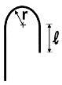
- 4×db 이상
- 6×db 이상
- 10×db 이상
- 12×db 이상
(정답률: 41%)
16. 보에서의 전단에 관한 설명 중 틀린 것은?
- 전단철근에는 스터럽과 절곡철근이 있다.
- 전단균열의 형태는 45°의 경사방향이다.
- 휨모멘트에 대하여 먼저 검토한 후 전단을 검토한다.
- 보에서 최대 전단응력이 발생하는 부분은 압축 측이다
(정답률: 40%)
17. 교량의 분류방법과 교량의 연결이 바른 것은?
- 사용 재료에 따른 분류 - 거더교
- 사용 용도에 따른 분류 - 곡선교
- 통로의 위치에 따른 분류 - 중로교
- 평면 형상에 따른 분류 - 2층교
(정답률: 71%)
18. 교량의 설계하중에 있어서 주하 중에 관한 설명으로 바른 것은?
- 항상 장기적으로 작용하는 하중
- 때에 따라 작용하는 하중
- 특별히 고려되어야 하는 하중
- 온도의 변화에 따른 하중
(정답률: 70%)
19. 강도 설계법의 기본 가정에서 보가 파괴를 일으킬 때의 압축 측의 표면에서 나타나는 콘크리트의 최대 변형률은 얼마로 가정하는가?
- 0.002
- 0.003
- 0.004
- 0.0⑤
(정답률: 79%)
20. 프리스트레스의 손실의 원인 중 도입할 때의 원인은 어느 것인가?
- 마찰에 의한 손실
- 콘크리트의 크리프
- 콘크리트의 건조 수축
- PS 강재의 릴랙세이션
(정답률: 44%)
2과목: 철근콘크리트
21. 보의 전단 설계에서 전단 철근의 설계 항복 강도는 얼마를 넘으면 안 되는가?
- 2000kgf/cm2
- 4000kgf/cm2
- 6000kgf/cm2
- 8000kgf/cm2
(정답률: 46%)
22. 토목 구조물의 특징에 속하지 않는 것은?
- 건설에 많은 비용과 시간이 소요된다.
- 공공의 목적으로 건설되기 때문에 사회의 감시와 비판을 받게 된다.
- 구조물의 공용 기간이 길므로 장래를 예측하여 설계하고 건설해야한다.
- 다량 생산이 가능하다.
(정답률: 78%)
23. 다음은 교량의 구조에 대한 설명이다. 옳지 않은 것은?
- 상부구조 가운데 사람이나 차량 등을 직접 받쳐주는 포장 및 슬래브의 부분을 바닥판이라 한다.
- 바닥판에 실리는 하중을 받쳐서 주형에 전달해 주는 부분을 바닥틀이라 한다.
- 바닥틀은 상부구조와 하부구조로 이루어진다.
- 바닥틀로부터의 하중이나 자중을 안전하게 받쳐서 하부구조에 전달하는 부분을 주형이라 한다.
(정답률: 37%)
24. 연속교 주형의 중간 부분의 적당한 곳에 힌지를 넣어서 정정구조로 되게 한 교량을 무엇이라 하는가?
- 단순교
- 연속교
- 게르버교
- 아치교
(정답률: 50%)
25. 다음 중 옹벽의 안정 조건이 아닌 것은?
- 전도에 대한 안정
- 침하에 대한 안정
- 활동에 대한 안정
- 충격에 대한 안정
(정답률: 52%)
26. 다음 중 구조용 강재의 단점에 속하지 않는 것은?
- 유지 관리비가 많이 든다.
- 반복하중에 대한 피로가 발생하기 쉽다.
- 차량 통행에 의하여 소음이 발생하기 쉽다.
- 미관을 고려한 형상을 만들기 어렵다.
(정답률: 54%)
27. 도로교의 설계 하중에서 1등교에 속하는 것은?
- DB - 8.5
- DB - 13.5
- DB - 18
- DB - 24
(정답률: 48%)
28. 철근 콘크리트에 사용하는 콘크리트의 요구 조건이 아닌 것은?
- 소요의 강도를 가질 것
- 내구성을 가질 것
- 수밀성을 가질 것
- 품질의 변동이 클 것
(정답률: 83%)
29. 설계의 절차에 있어서 다음 중 가장 나중에 해야 하는 것은?
- 재료의 선정
- 응력의 결정
- 하중의 결정
- 사용성의 검토
(정답률: 64%)
30. 보에서 중립축 상단의 압축응력을 전적으로 콘크리트가 부담하고, 중립축 아래의 인장응력을 받는 부분에만 철근을 배치하여 인장응력을 부담하도록 하는 것은 다음 중 어느 것인가?
- 단철근 직사각형보
- 복철근 직사각형보
- 연속보
- 단순보
(정답률: 45%)
31. KS의 부문별 기호 중 토목건축 부문의 기호는?
- KS C
- KS D
- KS E
- KS F
(정답률: 80%)
32. 그림과 같은 모양의 I형강 2개를 바르게 표시한 것은? (단, 축방향 길이=2000)
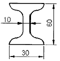
- 2-I 30×60×10×2000
- 2-I 60×30×10×2000
- I-2 10×60×30×2000
- I-2 10×30×60×2000
(정답률: 59%)
33. 물체를 평행으로 투상하여 표현하는 투상법이 아닌 것은?
- 사투상법
- 축측투상법
- 표고투상법
- 투시도법
(정답률: 34%)
34. 물체의 앞이나 뒤에 화면을 놓은 것으로 생각하고, 물체를 본 시선과 그 화면이 만나는 각 점을 연결하여 물체를 그리는 투상법은?
- 투시도법
- 사투상도법
- 정투상법
- 표고 투상법
(정답률: 48%)
35. 토목 구조물 도면 작성의 순서로 가장 적당한 것은?
- 외형선→중심선→지시선→철근선
- 기준선→철근선→외형선→해칭선
- 철근선→외형선→숨은선→치수선
- 중심선→외형선→철근선→치수선
(정답률: 50%)
36. 한글 Windows에서 도스 창에서 작업하다가 윈도우로 복귀할 때 사용하는 명령어 또는 키 중 맞는 것은?
- Exit
- Quit
- [Ctrl]＋[Esc] 키
- [Alt]＋[F4] 키
(정답률: 39%)
37. CAD소프트웨어의 기능 중 기본기능에 속하지 않는 것은?
- 도면 요소 편집 및 도면화 기능
- 도면 요소 작성 및 변환 기능
- 데이터 관리 및 가공정보 기능
- 화면제어 및 플로팅 기능
(정답률: 52%)
38. 플로터의 출력속도를 나타내는 단위로 맞는 것은?
- CPS(Character Per Second)
- IPS(Inch Per Second)
- BPS(Bits Per Second)
- DPI(Dots Per Inch)
(정답률: 42%)
39. 다음의 제도 용구 중 컴퍼스로 그리기 어려운 원호나 곡선을 그릴 때에 사용하는 것은?
- 운형자
- 삼각자
- 디바이더
- T자
(정답률: 49%)
40. A3용지에서 윤곽선은 용지의 가장자리로부터 몇 ㎜안으로 긋는가? (단, 철을 하지 않는 경우)
- 5㎜
- 10㎜
- 15㎜
- 25㎜
(정답률: 47%)
3과목: 토목일반구조
41. 토목제도에서 실제 크기와 도면에서의 크기와의 비율을 무엇이라 하는가?
- 척도
- 연각선
- 도면
- 표제란
(정답률: 81%)
42. 도면의 종류에서 복사도가 아닌 것은?
- 기본도
- 청사진
- 백사진
- 마이크로 사진
(정답률: 67%)
43. 콘크리트 내부의 구조 주체를 도면에 표시한 것으로 일반적으로 배근도라고 하는 것은 무엇인가?
- 일반도
- 구조도
- 상세도
- 일반구조도
(정답률: 49%)
44. 골재의 단면 표시 중 잡석을 나타내는 것은?
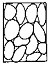
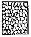
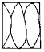
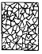
(정답률: 70%)
45. 도면에서 가장 굵은선이 사용되는 것은?
- 가상선
- 절단선
- 해칭선
- 외형선
(정답률: 85%)
46. 글자를 제도하는 방법을 설명한 것 중 틀린 것은?
- 문장은 가로 왼쪽부터 쓰기를 원칙으로 한다.
- 글자는 명조체를 원칙으로 한다.
- 숫자는 아라비아 숫자를 원칙으로 한다.
- 구조물 도면상의 글자 크기는 보통 4㎜로 한다.
(정답률: 58%)
47. 긴 부재의 단면 형상 중 각봉의 표시는?
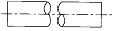
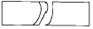
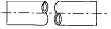
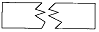
(정답률: 46%)
48. CAD 시스템으로 작성된 도면을 출력할 때 주로 쓰이는 장치는?
- 디지타이저
- 플로터
- 터치 패드
- 스캐너
(정답률: 69%)
49. 다음 축척 중 기본 축척 22종에 해당되지 않은 것은?
- 1/10
- 1/20
- 1/40
- 1/80
(정답률: 56%)
50. 도면의 표제란에 기입하지 않아도 되는 것은?
- 도면명
- 축척
- 시공자명
- 설계자명
(정답률: 55%)
51. 다음 그림과 같은 물체를 제3각법으로 나타낼 때 평면도는?
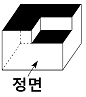
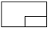
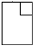
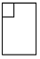
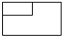
(정답률: 85%)
52. 그림은 어떠한 구조물 재료의 단면을 나타낸 것인가?
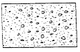
- 점토
- 석재
- 콘크리트
- 주철
(정답률: 77%)
53. 콘크리트 구조물의 제도에서 지름 22㎜ 일반 이형 철근의 표시법으로 옳은 것은?
- R22
- Φ 22
- D22
- H22
(정답률: 70%)
54. 토목설계 도면에서 주로 사용되는 도면의 크기는 A1과 A3이고, 프리핸드 도면에 주로 사용되는 도면크기는 A4이다. A4 용지의 크기를 올바르게 나타낸 것은?
- 841×594㎜
- 594×420㎜
- 420×297㎜
- 297×210㎜
(정답률: 77%)
55. 다음 중 선이 교차할 때 표시법으로 옳지 않은 것은?
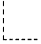
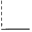
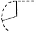
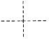
(정답률: 68%)
56. 다음 그림에서 치수보조선은 치수선 위로 어느 정도 연장하는가?
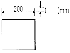
- 1∼2㎜
- 2∼3㎜
- 3∼4㎜
- 4∼5㎜
(정답률: 70%)
57. 다음은 재료의 단면표시이다. 무엇을 표시하는가?
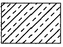
- 석재
- 목재
- 강재
- 콘크리트
(정답률: 66%)
58. 대칭인 도형은 중심선에서 한쪽은 외형도를 그리고 그 반대쪽은 무엇으로 표시하는가?
- 정면도
- 평면도
- 측면도
- 단면도
(정답률: 66%)
59. 리벳에 대한 설명 중 옳은 것은?
- 현장 리벳은 그 기호를 생략함을 원칙으로 한다.
- 리벳기호는 리벳선을 가는 파선으로 그린다.
- 축이 투상면에 나란한 리벳은 그리지 않음을 원칙으로 한다.
- 같은 도면 중에 다른 지름의 리벳을 사용할 경우, 리벳마다 그 지름을 기입하지 않음을 원칙으로 한다.
(정답률: 30%)
60. 인접한 두 면이 각각 화면과 기면에 평행한 때의 투시도를 무엇이라 하는가?
- 평행 투시도
- 유각 투시도
- 경사 투시도
- 정사 투시도
(정답률: 75%)